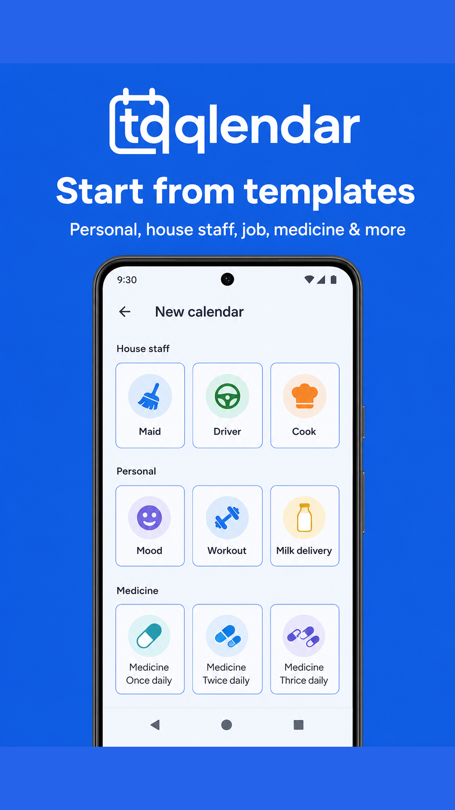
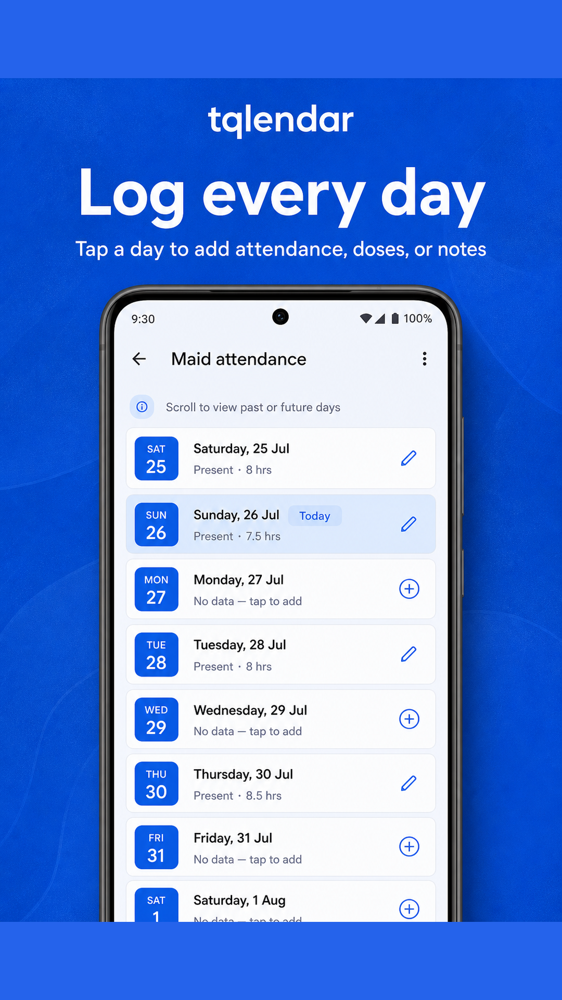
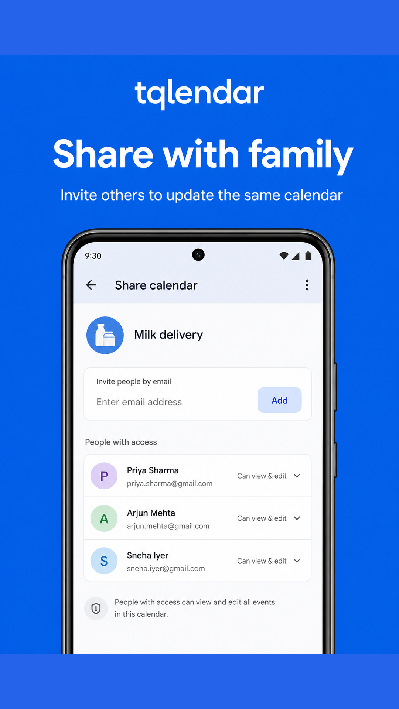
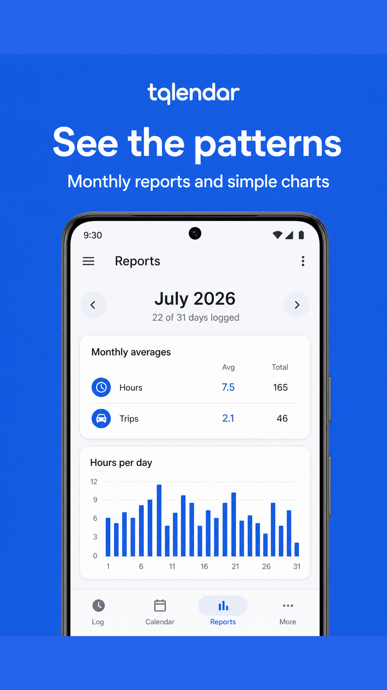

How to use tQlendar
1. Sign in
Open tQlendar and choose how you want to continue:
- Tap Continue with Google or Continue with Apple.
- Complete the provider sign-in prompt.
- You’ll land on My Tracker — your home list of calendars.
2. Create a tracker
Trackers are the shared calendars you fill each day.
- On My Tracker, tap New tracker.
- Pick a template (Milkman, Maid Attendance, Medicine, Mood, …) or Custom.
- Review the name, description, color, and fields. Add or remove fields as needed.
- Tap Create tracker.
Templates are grouped as Personal, House staff, Job, Medicine, and Home services. See the full list on the Templates page.

3. Field types
Every tracker needs at least one field. Available types:
- Options — tap one choice (e.g. Present / Absent). Each option has a color for the month grid.
- Number — quantities, hours, litres, amounts.
- Free text — short notes.
- Long text — diary-style entries.
When creating or editing, tap Add field to pick from the field library (attendance, doses, commute modes, and more) or define your own.
4. Log a day
- Open a tracker from My Tracker.
- On the month calendar, tap the day you want to log.
- Fill each field — options are one tap; numbers and notes are typed.
- Tap Save day.
Days light up with option colors so patterns (missed deliveries, leave days, mood swings) are visible at a glance. Viewers can open days but cannot save changes.

5. Edit or delete a tracker
Owners can change a tracker’s setup:
- Open the tracker and tap the Edit (pencil) icon.
- Update name, description, color, or fields.
- Tap Save changes.
To remove a tracker permanently, use Delete tracker on the edit screen. This also removes its day entries and related reminders. This cannot be undone.
6. Share & invitations
Only the owner manages sharing. Collaborators get either:
- Can edit — view and edit entries & checklists.
- View only — view everything, cannot edit.
Invite by email
- Open the tracker → More (⋯) → Share.
- Choose access: Can edit or View only.
- Enter their email and send the invite.
- They accept from Invitations (person+ icon on My Tracker).
Invite link
- On the Share screen, create an invite link for the access level you want.
- The link is copied for you — it’s one-time use.
- The recipient opens it in the app (or pastes the link/token under Invitations).

7. Reports & summaries
- Open a tracker → More (⋯) → Reports.
- Swipe months with the arrows, or pick a month from the calendar icon.
- Switch between Charts and Totals.
- Tap the share icon to export a summary snapshot image.
You can also open Summary snapshot from the More menu without leaving the month view.

8. Checklists
Attach reusable lists (shopping, chores, packing) to any tracker.
- Open a tracker and tap the checklist icon.
- Tap New list, name it, and create.
- Open the list and add items one by one.
- Check items off as you go. Optional: attach a photo to an item.
Shopping-mode lists sync live — when someone else checks an item, you’ll see a short toast naming who updated it. Editors can change lists; viewers cannot.
9. Holidays
App holiday preferences
- Open the greeting / system calendar on My Tracker (the top card with today’s greeting).
- Tap the tune icon (Holiday settings).
- Select at least one country and one holiday type, then save.
Tracker holidays
- Open a tracker → More → Holidays.
- Tap Select public to add holidays from your preferences, or Add custom for a named date.
- Remove any holiday you no longer need on that tracker.
10. Reminders
You can add a reminder from the tracker or from a specific day:
- Open a tracker and tap the add reminder (bell+) icon, or open a day and tap the bell icon.
- Set time, optional note, and repeat: none, daily, weekly, or monthly.
- Save — allow notifications if your phone asks.
If a day already has reminders, the bell shows as active so you can review or edit them.
11. Account settings
- On My Tracker, tap your avatar (top left).
- Review profile, app version, and links to Support / Privacy / Terms.
- Sign out clears local session data on this device.
- Delete account permanently removes your account and trackers you own. Shared memberships remove you only. This cannot be undone.
Web instructions for deletion are also on the Delete Account page.